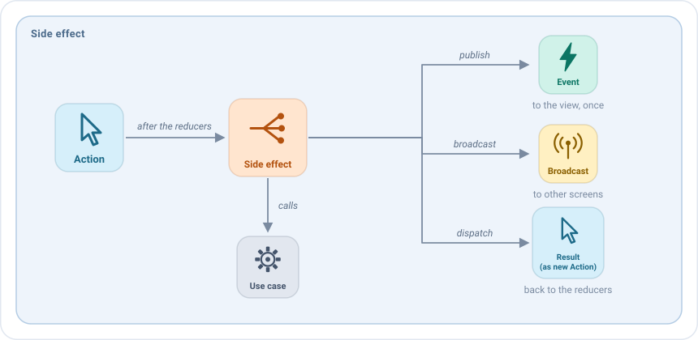
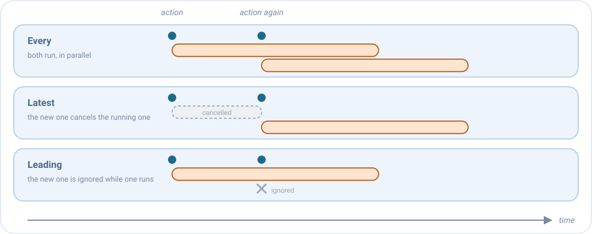

Side effects¶
Un side effect es el trabajo que inicia una acción: cargar datos, guardar algo, llamar a un caso de uso, esperar a un temporizador. Se ejecuta después de los reducers de la acción, así que ya ve el nuevo estado, y comunica lo ocurrido de tres formas:

Cuando termina su trabajo, un side effect no puede cambiar directamente el estado ni la UI. Comunica el resultado con una de estas tres funciones, según lo que tenga que pasar con él:
| Úsalo para | Llama a | Ejemplo | Resultado |
|---|---|---|---|
| Guardar el resultado en el estado | dispatch(action) |
Los amigos se han cargado: dispatch(HomeAction.SideEffects.QueryLoaded(friends)) |
Un reducer los pone en el estado y la lista los muestra. |
| Lanzar una acción de UI de un solo uso, como navegar o mostrar un mensaje | publish(event) |
El usuario ha pulsado un amigo: publish(HomeEvent.FriendSelected(friend)) |
Se abre el perfil del amigo. |
| Avisar a otros ViewModels | broadcast(action) |
Se ha creado un amigo: broadcast(ProfileBroadcast.FriendCreated(friend)) |
Los ViewModels que lo escuchan lo reciben. Mira Broadcasts. |
Un side effect nunca cambia el estado por sí mismo: envía una acción y un reducer la aplica. Así cada cambio del estado está en un único sitio, y es visible como una acción.
Tu primer side effect¶
Los side effects se declaran en el bloque sideEffects del setup, para un tipo de acción. Son suspend, así que
pueden llamar a casos de uso directamente:
sideEffects {
add<HomeAction.RefreshRequested> {
dispatch(HomeAction.SideEffects.QueryStarted)
getFriendsUseCase(GetFriendsUseCase.Input(state.query))
.onSuccess { friends -> dispatch(HomeAction.SideEffects.QueryLoaded(friends)) }
.onFailure { dispatch(HomeAction.SideEffects.QueryFailed) }
}
}
Paso a paso:
- El usuario tira para refrescar, y la vista envía
RefreshRequested. - Se ejecutan los reducers de
RefreshRequested. Después empieza este side effect. - Envía
Started: un reducer muestra el indicador de carga. - Espera al caso de uso. Mientras tanto la pantalla sigue funcionando.
- Envía
LoadedoFailed: un reducer muestra la lista o el diálogo de error.
Dentro de la lambda tienes state (siempre el más reciente), la action que lo lanzó, y dispatch, publish y
broadcast.
Publicar un evento¶
Cuando la vista debe hacer algo una vez, como navegar o mostrar un mensaje, publica un evento:
sideEffects {
add<HomeAction.FriendClicked> { action ->
publish(HomeEvent.FriendSelected(action.friend))
}
}
Cuando la misma acción llega dos veces¶
¿Y si el usuario vuelve a tocar "refrescar" mientras el primer refresco sigue en marcha? Lo eliges con concurrency:

concurrency |
Qué pasa | Úsalo para |
|---|---|---|
Every (por defecto) |
Se ejecutan ambos, a la vez. | Trabajo independiente, como enviar mensajes. |
Latest |
Se cancela el que está en marcha y empieza el nuevo. | Una búsqueda: solo importa la última consulta. |
Leading |
Se ignora el nuevo mientras hay uno en marcha. | Un botón pulsado dos veces: no lo envíes dos veces. |
sideEffects {
add<HomeAction.RefreshRequested>(concurrency = SideEffectConcurrency.Leading) { /* ... */ }
add<HomeAction.QueryWritten>(concurrency = SideEffectConcurrency.Latest) { /* ... */ }
}
Rendirse tras un tiempo¶
Con timeout, un side effect que tarda demasiado se cancela, y se ejecuta onTimeout en su lugar:
sideEffects {
add<HomeAction.RefreshRequested>(
timeout = 10.seconds,
onTimeout = { dispatch(HomeAction.SideEffects.QueryFailed) }
) {
// ...
}
}
Cuando se cierra la pantalla¶
Cuando se cierra la pantalla, los side effects en marcha se cancelan, porque nadie vería su resultado. Dos opciones
permiten que el trabajo termine igualmente, hasta el closeTimeout de la configuración:
survivesClose = true: el side effect puede terminar después de cerrar la pantalla, como una petición que guarda lo que hizo el usuario.onClose { }: trabajo que empieza cuando se cierra la pantalla, como enviar un resultado a la pantalla anterior.
sideEffects {
add<EditorAction.SaveClicked>(survivesClose = true) { saveDraftUseCase(state.draft) }
onClose { broadcast(EditorBroadcast.Closed(state.draft)) }
}
Errores¶
Si un side effect lanza una excepción, decide la política de errores de la configuración: fallar al instante durante el desarrollo, o reportarla y mantener la pantalla funcionando. Para los errores que esperas, como una petición fallida, devuelve un resultado desde el caso de uso y envía una acción, como en los ejemplos anteriores.
Los errores y el listener de side effects identifican cada side
effect por el tipo de su acción, RefreshRequested en los ejemplos anteriores. Pasa name a add para elegir otro:
add<HomeAction.RefreshRequested>(name = "refreshFriends") { ... }.
Side effects como valores¶
Un side effect también se puede crear con sideEffectOf, o escribir como una clase que implementa SideEffect, para
declararlo como propiedad, compartirlo o recibirlo en el constructor. Así es como la misma pantalla puede llamar al
backend real en producción y a un mock en una build de demo:
class HomeViewModel(private val getFriendsUseCase: GetFriendsUseCase) :
EmaViewModel<HomeState, HomeAction, HomeEvent>(HomeState()) {
private val openFriend = sideEffectOf(HomeAction.FriendClicked::class) { action ->
publish(HomeEvent.FriendSelected(action.friend))
}
override fun setup() = source {
sideEffects { add(openFriend) }
}
}
Mira Las piezas son valores e Inyección de dependencias y entornos.
Consejos¶
- Mantén la lógica de negocio en los casos de uso. El side effect los llama y convierte su resultado en acciones.
- Envía una acción por cada paso del trabajo, como
Started,LoadedyFaileden tu primer side effect. Así los reducers pueden mostrar cada paso (carga, lista, error), y los tests también pueden comprobarlo. - Elige la concurrencia a propósito.
Everyes el valor por defecto, pero la mayoría de acciones del usuario quierenLeadingoLatest.